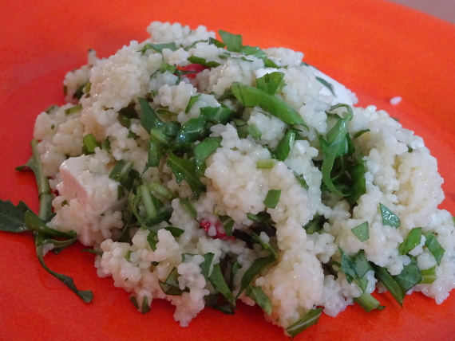

Couscous-Salat mit Feta

- Zubereitung: ca. 15 Minuten
- Für 4 Portionen
Zutaten
- 250 g Instant-Couscous
- 500 ml Gemüsebrühe
- 1 Bund Rucola
- 1 Bund Basilikum
- 1/2 Bund Minze
- 200 g Feta-Würfel (in Öl eingelegt)
- 4 EL Zitronensaft
Zubereitung
- Den Instant-Couscous nach Packungsangabe mit der heißen Brühe übergießen und etwa 5 Minuten quellen lassen. Den Rucola abbrausen, trocken schütteln, und wie die Blätter von Basilikum und Minze sehr fein hacken. Die Feta-Würfel abgießen, das
Öl dabei auffangen.
- Couscous mit einer Gabel auflockern. Den Zitronensaft mit 3 EL aufgefangenem Öl verrühren. Die Kräuter, Dressing und die Feta-Würfel unter den Couscous mischen. Mit Salz und Pfeffer abschmecken.